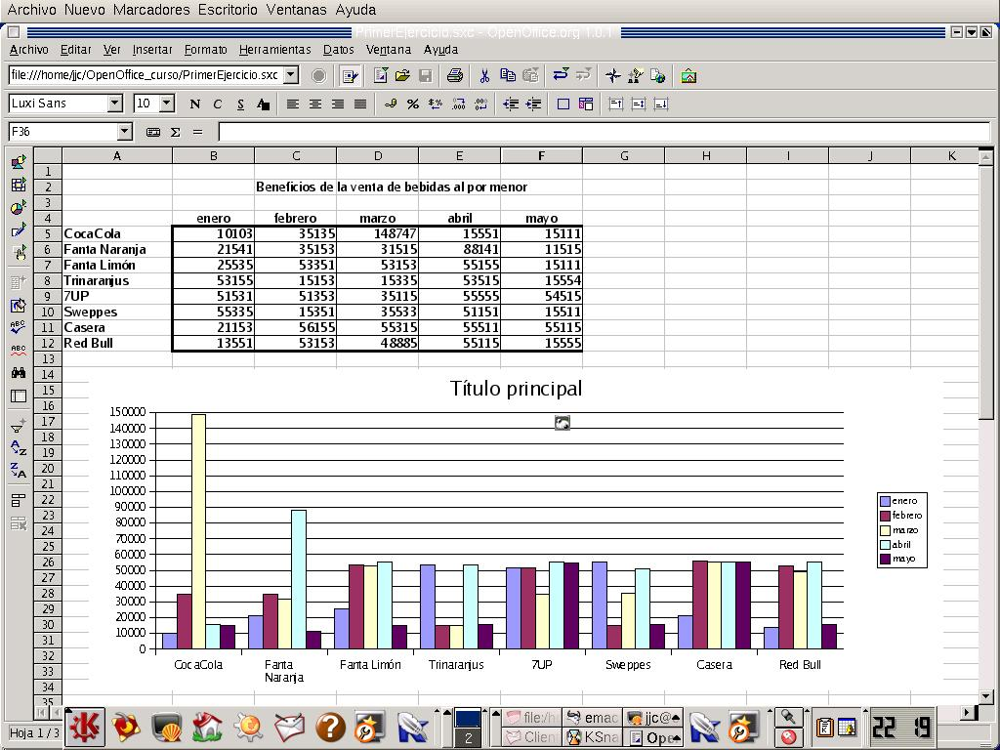
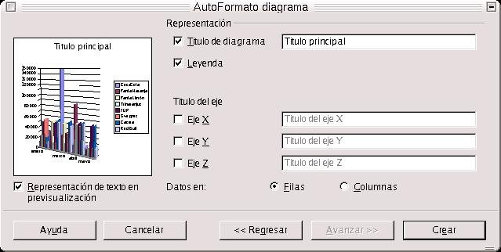
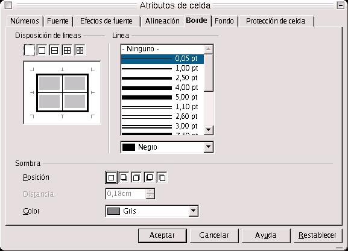

Capítulo 3. OpenOffice.org Calc
Otra de las herramientas estrellas de OpenOffice.org, y que nos sirve para la edición de Hojas de Cálculo es Calc. Se puede definir una hoja de cálculo como un grupo de datos normalmente numéricos, agrupados en tablas con filas y columnas, y con elementos comunes, que nos van a servir para representar una realidad. Con dichos datos puedo realizar gráficos, estudiar tendencias, realizar estadísticas, funciones matemáticas, cáculos numéricos... y un sinfín de cosas.
Se usan mucho para la visualización de datos de ventas de productos, estudios de mercado, o para las estadísticas.
Para entender mejor el funcionamiento de OpenOffice.org Calc, vamos a realizar una serie de ejercicios, que se irán explicando a medida que se vayan haciendo.
3.1. Ejercicio 1 de Introducción a OpenOffice.org Calc
El primer ejercicio es una mera introducción a Calc. Usaremos los elementos más básicos para realizar una hoja de cálculo, que son una tabla, sus elementos, y un sencillo gráfico. A medida que vayamos avanzando nos iremos metiendo en la realización de ejercicios cada vez más completos.
Imaginemos que trabajamos para un negocio de bebidas, y que mostrar los resultados de los beneficios por meses obtenidos de la venta de diversas marcas de bebidas. Tenemos la CocaCola, la Fanta de Naranja, la de Limón, el Trinaranjus, el 7UP, Schweppes, Casera y Red Bull. Y queremos representar los datos mediante un gráfico.

En primer lugar, debemos realizar la tabla de datos. Colocamos en primera columna los nombres de las bebidas, y en las siguientes, en la primera fila, los nombres de los meses. Colocamos en la misma tabla, por columnas los beneficios por cada mes obtenidos de la venta de cada bebida.
Para realizar el gráfico, nos vamos dentro de la barra de herramientas, a Insetar Objeto-->Insetar Diagrama. Una vez hecho esto, nos sale un cuadro de diálogo como el siguiente, llamado Autoformato Diagrama. Seleccionamos el área que ha de representarse en el gráfico, y ponemos como etiquetas la Primera Fila y la Primera Columna.

Al pulsar en el botón Siguiente, nos sale otro cuadro de diálogo, para la selección del tipo de gráfico. Seleccionamos el que queramos, podemos poner los datos en filas o en columnas, y pedir en la casilla de verificación de la izquierda que se representen los textos en la ventana de previsualización.

Más adelante, en el siguiente cuadro de diálogo, nos pedirá que introduzcamos una variante del gráfico, y qué lineas de cuadrícula queremos que dibuje, las X o las Y.
En el último cuadro de diálogo, antes de darle definitivamente a Crear, nos solicita el título del diagrama y los de los ejes. En nuestro caso sería Beneficios por Bebidas, y como título de los ejes, el de las X, Meses, y el de las Y, Beneficios.

Una vez hecho esto ya tenemos el gráfico creado. Pero todavía no ha terminado el ejercicio.
Vamos a dar formato a la tabla:
Imaginemos que queremos ponerle unos bordes. Para ello podríamos seleccionar el área de datos de la tabla, pulsar en el botón Borde de la barra de objetos, y seleccionar el borde que deseamos poner.
Pero, mejor aún. Imaginemos que queremos que el borde exterior sea más grueso que los interiores. Si nos damos cuenta, en la tabla antes expuesta el borde exterior es más grueso que los interiores. ¿Cómo hacer esto?.
Fácil: seleccionar el área de datos de la tabla, sin los encabezados, y pulsar con el botón derecho del mouse sobre el área seleccionada. Inmediatamente se presenta un cuadro de diálogo flotante, y en él seleccionamos Formato de Celdas. Entonces, se nos presenta un cuadro de diálogo con varias pestañas. Entre ellas, escogemos la pestaña Borde. Dentro de la misma, se nos presenta una ficha como la que sigue:

Si nos fijamos en la ventanita Disposición de Línea, aparecen seis líneas, dos interiores que se cortan en la mitad, y cuatro exteriores que representan a los exteriores de la tabla. Para seleccionar el tipo de línea para cada borde, seleccionamos la línea pulsando sobre ella, y después el borde o bordes que queremos que contengan dicho grosor de línea. Una vez hecho esto para todos las líneas, pulsamos en Aceptar e inmediatamente se aplican los cambios.